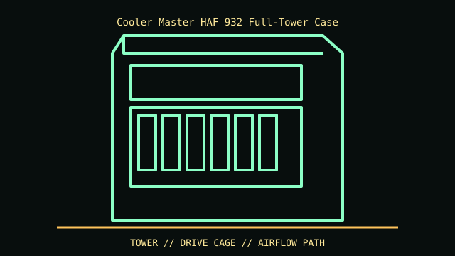

[ IDENTIFIED ENCLOSURE // COOLER MASTER HAF 932 (ORIGINAL FULL TOWER) ]
Cooler Master HAF 932 Full-Tower Case
560 × 243 × 564 mm (H × W × D); full tower, side-panel 230 mm fan and top radiator clearance depend on installed fan/radiator hardware.

REVISION / FIT CAVEAT: Original HAF 932 differs from HAF 932 Advanced and regional bundles (front USB and fan/controller contents); HAF X is different. Confirm exact front-panel ports and serial/model sticker.
Model-specific mechanical record
| Catalog leaf | Tower and legacy desktop cases |
|---|---|
| Identity / generation | Cooler Master HAF 932 (original full tower) |
| Dimensions / clearance | 560 × 243 × 564 mm (H × W × D); full tower, side-panel 230 mm fan and top radiator clearance depend on installed fan/radiator hardware. |
| Drive bays / mounts | Six external 5.25-inch positions (one can convert to exposed 3.5-inch) plus five internal 3.5-inch positions. |
| Board / chassis compatibility | E-ATX, ATX and microATX support. Long card clearance depends on lower HDD cage and fan arrangement; large PSU cable paths compete with bottom intake. |
| Revision identification | Original HAF 932 differs from HAF 932 Advanced and regional bundles (front USB and fan/controller contents); HAF X is different. Confirm exact front-panel ports and serial/model sticker. |
Compatibility and preservation
E-ATX, ATX and microATX support. Long card clearance depends on lower HDD cage and fan arrangement; large PSU cable paths compete with bottom intake.
Retain modular drive cage, top radiator bracket and removable mesh filters; old 230 mm fans use nonstandard sizes. Inspect plastic fan mounts and front-I/O wiring.
Before transfer or restoration, photograph the complete model label, assembly/board revisions, bay/backplane identifiers and included accessories. Measure the actual specimen when planning installation or shipping; nominal envelope figures may exclude protruding feet, rails, doors or cables.
Manufacturer manuals and archival sources
- Cooler Master Legacy — HAF 932 specificationsModel-specific manufacturer specification, service manual, or technical reference used for the listed dimensions and mechanical configuration.
- Cooler Master HAF 932 user manual scan — ManualsLibSupplemental model documentation or institutional/technical archival record; use the exact product code and manual revision for a specimen.
Listings distinguish base configuration from optional drive, PSU, fan, rack and accessory kits. Do not combine maximum capacities if cages or components occupy the same volume.